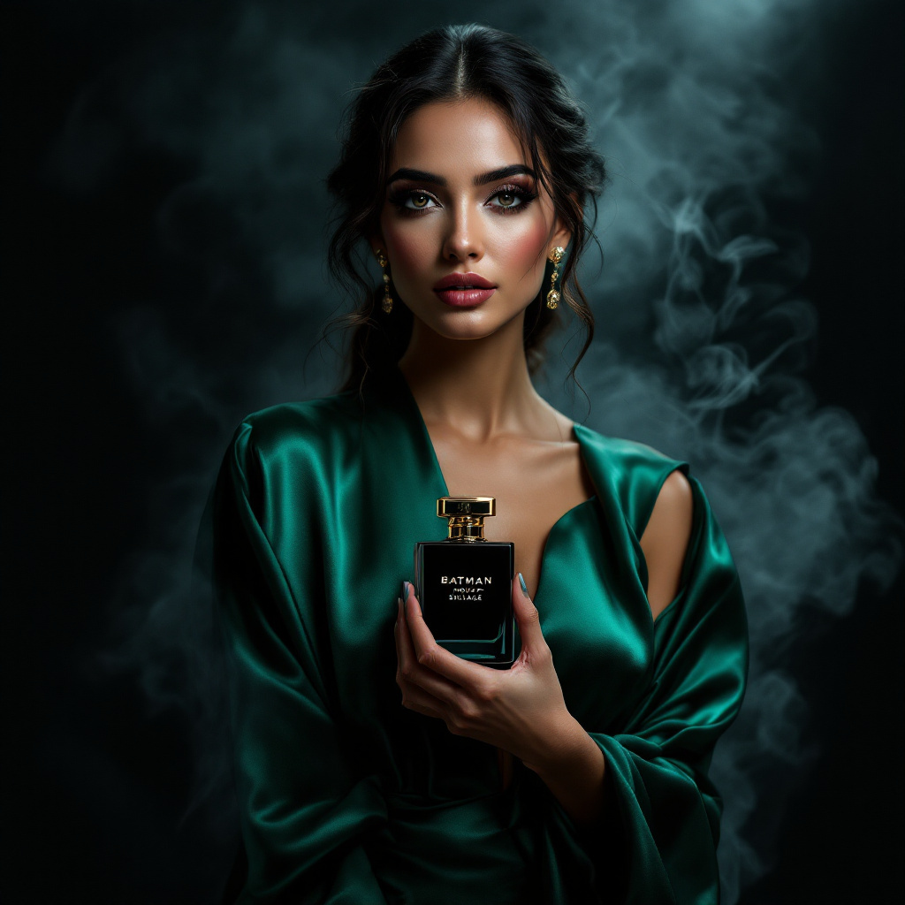

Haute Parfumerie Review
When it comes to luxury perfumes, one name that stands out is the batman house of sillage, a fragrance that promises to leave a lasting impression with its unique scent profile. As someone who appreciates the art of haute parfumerie, you're likely wondering what sets this particular fragrance apart from others in the market, and how it can elevate your personal style.
The world of luxury perfumery is vast and complex, with numerous options available to suit different tastes and preferences. However, the batman house of sillage has garnered significant attention for its exquisite craftsmanship and attention to detail, making it a sought-after choice among connoisseurs. Additionally, the niche perfumery scene has seen a surge in popularity, with many seeking unique and exclusive fragrances that reflect their individuality.
The batman house of sillage boasts an impressive array of features, including its distinctive sillage, which refers to the trail of scent left behind by the fragrance. As a result, this perfume is perfect for those who want to make a statement with their fragrance choice.
The batman house of sillage is suitable for anyone who appreciates luxury perfumes and is looking for a unique and exclusive fragrance. However, it's particularly well-suited for those who prefer complex and nuanced scents, as well as those who value the art of haute parfumerie. Additionally, the fragrance is appropriate for both men and women, making it a great choice for anyone looking for a unisex perfume.
The batman house of sillage is a masterpiece of fragrance composition, featuring a range of high-quality ingredients that work together to create a unique and captivating scent profile. As a result, the perfume is perfect for those who appreciate the art of perfumery and are looking for a fragrance that will impress.
| Ingredient / Feature | Scent Role |
|---|---|
| Bergamot | Top note, provides a fresh and citrusy scent |
| Lavender | Top note, adds a floral and herbaceous note to the fragrance |
| Vanilla | Base note, provides a sweet and creamy scent |
| Musk | Base note, adds depth and warmth to the fragrance |
Bergamot is a key ingredient in the batman house of sillage, providing a fresh and citrusy scent that is perfect for everyday wear. Additionally, bergamot has been shown to have a range of benefits, including reducing stress and anxiety, making it a great choice for those who appreciate the therapeutic properties of fragrances.
According to a study published in the Journal of Alternative and Complementary Medicine, bergamot oil has been shown to have a positive effect on mood and cognitive function, making it a great choice for those who appreciate the benefits of aromatherapy.
Lavender is another key ingredient in the batman house of sillage, adding a floral and herbaceous note to the fragrance. Furthermore, lavender has been shown to have a range of benefits, including promoting relaxation and improving sleep quality, making it a great choice for those who appreciate the calming properties of fragrances.
To get the most out of the batman house of sillage, it's essential to use it correctly. Therefore, we've put together a few tips to help you enjoy this fragrance to its fullest potential.
When using the batman house of sillage, there are a few common mistakes to avoid, including applying too much fragrance at once, which can be overwhelming, and not storing the fragrance properly, which can affect its quality and longevity.
Always patch test a new fragrance on a small area of skin before applying it to your body, to ensure that you don't have any sensitivity or allergic reactions.
The batman house of sillage has a unique and captivating scent profile, featuring a blend of top notes, including bergamot and lavender, and base notes, including vanilla and musk. Additionally, the fragrance has a range of accords, including floral, woody, and oriental notes, which work together to create a complex and nuanced scent.
The batman house of sillage is a long-lasting fragrance, lasting up to 8 hours on the skin. However, the longevity of the fragrance can vary depending on a range of factors, including the concentration of the fragrance and the individual's skin type.
Yes, the batman house of sillage is suitable for everyday wear, thanks to its unique and captivating scent profile and long-lasting formula. Additionally, the fragrance is available in a range of concentrations, making it easy to find a strength that suits your preferences.
Yes, the batman house of sillage can be layered with other fragrances to create a unique and complex scent profile. However, it's essential to experiment with different combinations to find the one that works best for you.
The batman house of sillage is a luxury fragrance that is sure to impress, thanks to its unique and captivating scent profile, long-lasting formula, and sleek packaging. While it may come with a higher price tag than some other perfumes on the market, the quality and craftsmanship of the fragrance make it well worth the investment. Therefore, if you're looking for a fragrance that will make a statement and leave a lasting impression, the batman house of sillage is definitely worth considering.
If you're ready to experience the luxury and exclusivity of the batman house of sillage for yourself, click the link to purchase it today.